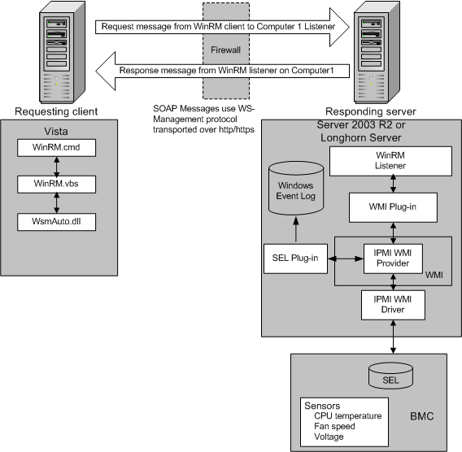

title: Windows Remote Management Architecture description: The Windows Remote Management architecture consists of components on the client and server computers. ms.assetid: 82e67851-fe46-4bb0-8278-9718b5e0c7ae ms.tgt_platform: multiple ms.topic: article ms.date: 05/31/2018 topic_type:
The Windows Remote Management architecture consists of components on the client and server computers. The following illustration shows the components on both computers, how the components interact with other components, and the protocol that is used to communicate between the computers.

The following WinRM components reside on the computer that is running the script that requests data.
WinRM application
This is the script or Winrm command-line tool that uses the WinRM scripting API to make calls to request data or to execute methods. For more information, see the WinRM Scripting API.
WSMAuto.dll
The Automation layer that provides scripting support.
WsmCL.dll
C API layer within the operating system.
HTTP API
WinRM requires support for HTTP and HTTPS transport.
The following WinRM components reside on the responding computer.
HTTP API
WinRM requires support for HTTP and HTTPS transport.
WSMAuto.dll
The Automation layer that provides scripting support.
WsmCL.dll
C API layer within the operating system.
WsmSvc.dll
WinRM listener service.
WsmProv.dll
Provider subsystem.
WsmRes.dll
Resource file.
WsmWmiPl.dll
WMI plug-in. This allows you to obtain WMI data through WinRM.
Intelligent Platform Management Interface (IPMI) driver and WMI IPMI provider
These components supply any hardware data that is requested using the IPMI classes. For more information, see IPMI Provider. BMC hardware must have been detected by the SMBIOS or the device created manually by loading the driver. For more information, see Installation and Configuration for Windows Remote Management.
About Windows Remote Management
Â
Â